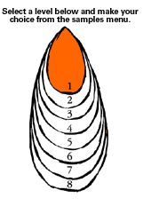
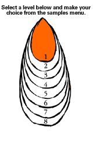

Level 1: Painting
PLANNING AND ASSESSMENT
Share Impressionist works with the students.
Focus on: Monet, Renoir, Mary Cassat, Frances Hodgkins.
Look at characteristics of Impressionist painting.
Focus on Monet's waterlily series.
During discussion and observation show examples of the techniques and processes of layering, overlapping and colour mixing.
During the discussion begin to introduce relevant art elements and principles.
Note:
Elements and principles should be introduced gradually over several lessons.
Elements (the following elements will be used throughout the following sessions):
Colour
Shape
Space
Principles (the following principles will be used throughout the following sessions)
Balance
Contrast
Possible starting points
Focusing on the topic:
Select several waterlily paintings from Monet's collection
Observe waterlily plants in situ:
- Visit a park or a garden with a pond.
- Notice and discuss the effects of light on the water and plants.
- Sketches may be made using chalk and dark paper.
- Photograph plants and lilies with digital camera for use later.
If possible have lilies or like plants in classroom for observation and sketching.
Discussion
Reflect on the experiences associated with the observation of the lily pond:
- Was all the water the same colour?
- What colours did you see?
- How were the lily plants grouped on the water?
- What colours did you see in the leaves and flowers?
- Did they seem to float?
More information on art elements http://www.cyberschool.k12.or.us/~wallace
Possible learning approaches
Each activity could be the focus for one or more lessons or units of work.
The following are ideas that, the teacher could adapt and apply by using instructions appropriate to the level of the children.
Background
Prior learning: Children will need to have explored the use of primary colours to mix secondary colours so that they can make their own art works in response to experiencing Impressionist works.
Referring to the discussion points regarding the colour of the water, provide a limited palette of three primary colours plus white for the children to use to create the water background.
Note
This background should be created on an A2 piece of cartridge paper and kept, as it is the basis for the work.
Drawings
Experiment with drawings to develop the visual ideas. Drawings can be in a continual state of development.
- If possible have lilies or similar plants in the classroom for observation and sketching.
- You could refer to the photographs taken of the pond or prints of Monet's water lilies during drawing sessions to give confidence to the children whilst they are experimenting.
- Using scrap paper experiment with chalk, drawing leaves and flowers.
- Reflect on these drawings. Share ideas about shape, size and space.
- Continue experimenting until children are feeling confident with their creations.
Sgraffito
- Have the children cover an A5 sheet of paper with a layer of paint.
- Show them how to use a pointed tool to scratch images into wet paint.
- Let them draw freely into the paint creating flowers and leaves, revealing the bare paper underneath.
- Try a second colour over a dry first paint layer so they experience the first colour appearing where they scratch images through the second wet layer of paint.
Painting
Using the drawings, allow children to experiment with paint. Encourage minimal reworking. Allow children to create another leaf or flower until they are satisfied. This process may take an entire session. Suggest they add sgraffito effects. Reflect on these experiments.
Note:
Although the students are drawing from observation, it is the use of paint that will create the characteristics of Impressionism.
Creating the Art Work
Using the prepared background, have the students draw outlines of leaves and lilies in white chalk, attending to balance and overlapping.
Using a limited palette of the three primary colours plus white, paint over the initial chalk drawings. This is a layering process. Include sgraffito to enrich the image.
Discuss the finished work:
- Can you see contrast? (Are some parts of the picture darker, lighter, greener etc than others?)
- Is the picture balanced? (Are the flowers clumped together or evenly spaced or are they in irregular groups?)
- Do the colours give the impression of the lilies and the water which you wish to show in your picture?
- Are you satisfied with your work?
Materials
Small pieces of dark paper and white chalk for observational sketches
Digital camera for photographing flowers and water
A2 cartridge paper
Dye (for background)
White chalk
Tempera paint, acrylic. (Primary colours plus white) see hint below
Variety of brush sizes (i.e., large and small)
Pointed tools for sgraffito. (End of paint brush handle)
Hints
Younger children may gain more confidence by creating the background water first. Let them experience drawing waterlily leaves and flowers from examples or photographs. Use chalk to decide where to place the leaves and flowers, emphasising overlapping.
Paint
Mix powdered tempera with cellulose paste. Add a small amount of household detergent and water to make a thick paste. This gives the effect of an "oil" paint texture. Quantities may vary depending on the amount required.
Assessment
Possible learning outcomes include:
Students will be able to:
- observe and discuss how they have used visual arts elements of colour, shape and space in their work (CI);
- begin to use techniques of overlapping (PK);
- recognise the principles of contrast and balance in their own work and that of others (PK/CI).
|

 
